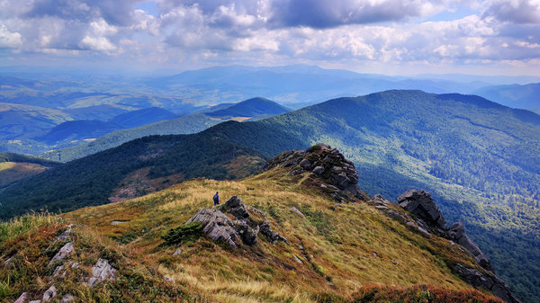
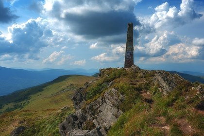
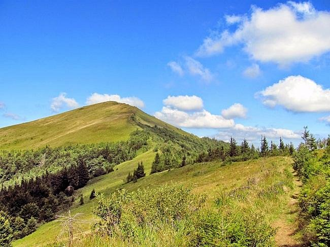
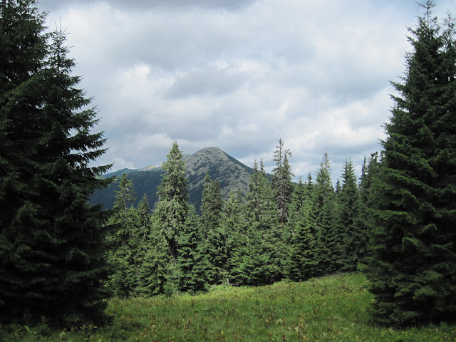
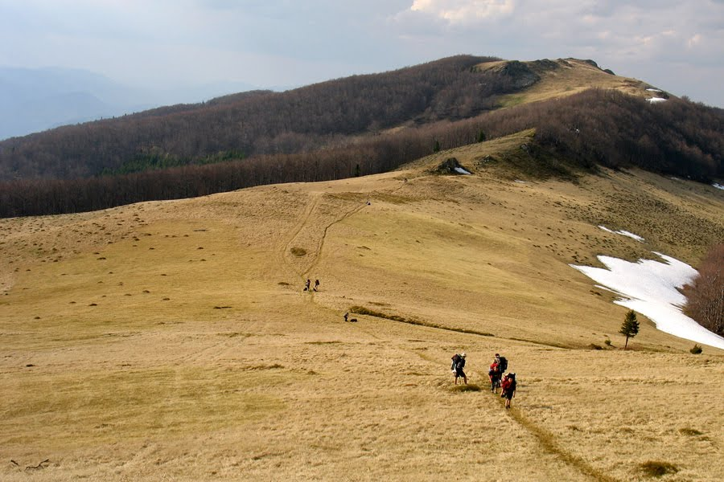
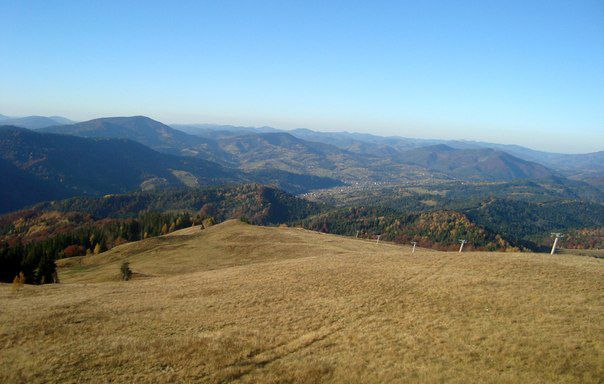
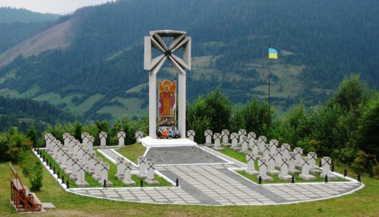
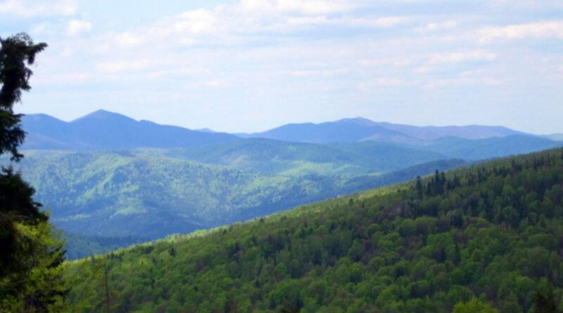

Найвищі гори Львівщини

На Львівщині є кілька вершин, на які можна піднятися і побачити красиві краєвиди Карпатських гір.
Подаємо вам список гір, які варто підкорити.
- Пікуй - 1408 метрів
- Парашка - 1271 метрів
- Лопата - 1211 метрів
- Дрогобицький Камінь - 1186 метрів
- Високий Верх - 1177 метрів
- Маківка - 958 метрів
- Ключ - 927 метрів
Пікуй - 1408 метрів
Найвища вершина Львівщини та Вододільного хребта, на кордоні із Закарпаттям. Поруч пролягав колись найдавніший шлях через Карпати – Руська Путь. Піднятись на гору можна із сіл Кривка, Верхній Гусний або Біласовиця (із Закарпатського боку).
Парашка - 1271 метрів
Найвища вершина у Сколівських Бескидах. На горі встановили пам’ятну дошку, з написом «у 1015 році тут була вбита і похована донька древлянського князя Святослава Параскевія», і з того часу гора носить її ім’я. Цій події передувала битва між синами хрестителя Русі Володимира Великого — Святославом та Святополком Окаянним — біля міста Сколе.
Лопата - 1211 метрів
Це місце відомого переможного бою УПА з військами Вермахту у 1944 р. На горі встановили пам’ятний хрест. Потрапити сюди можна зі Сколе або Кам’янки.
Дрогобицький Камінь - 1186 метрів
Одна з вершин Вододільного хребта. На горі можна побачити кам’яні розсипи та невеликі скелі. Через вершину проходить туристичний шлях, що веде від села Сянок на гору Пікуй.
Високий Верх - 1177 метрів
Найвища вершина на хребті Росохацькі Полонини. На горі у 2011 р. побудована церква Св. Пророка Іллі, що вважається найвищою точкою православ’я України.
Маківка - 958 метрів
Місце запеклих боїв 1915 року легіону Українських січових стрільців з російськими військами, що мали кількісну перевагу. На горі створили меморіальний військовий цвинтар. Традицію сходження на Маківку українські молодіжні організації практикують ще з 1930-х років.
Ключ - 927 метрів
Ще одне місце боїв між частинами Січових стрільців і російською армією. Недалеко від вершини знаходиться меморіал загиблим. Хребет усіяний мальовничими скельними виходами, найбільші і найвідоміші з них мають туристичні назви «Стоунхендж» і «острів Пасхи». Неподалік від вершини є тектонічний розлом, схожий на каньйон, але сухий, місцями досягає глибини 5-7 метрів.
